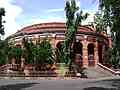
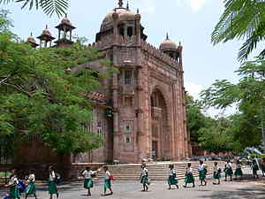
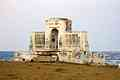
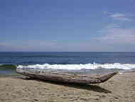
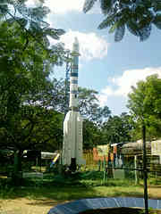
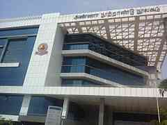

|
|
Museums and libraries

The Government Museum Complex
The Government Museum Complex in Egmore houses the Government Museum, Connemara Public Library and the National Art Gallery. Established in 1851, the museum consisting of six buildings and 46 galleries covers an area of around 16.25 acres (66,000 m²) of land. The objects displayed in the museum cover a variety of artifacts and objects covering diverse fields including archeology, numismatics, zoology, natural history, sculptures, palm-leaf manuscripts and Amravati paintings. Connemara Public Library is one of the four National Depository libraries which receive a copy of all books, newspapers and periodicals published in India. Established in 1890 the library is a repository of centuries-old publications, wherein lie some of the most respected works and collections in the country. It also serves as a depository library for the UN. The National Art Gallery building is one of the finest Indo-sarcenic type of architectures in the country.

The National Art Gallery
The National Art Gallery situated in Egmore, Chennai, is one of the oldest art galleries in India. Constructed with red stones sourced from Satyavedu in Andhra Pradesh, the Gallery was built in 1906 in Indo-Sarsenic architecture and houses paintings from Thanjavur, Rajasthan, Kangra and Deccan areas, as well as sandalwood sculptures. The Gallery has remained closed since 2002, as part of the structure suffered damage. The National Art Gallery was built during the celebration of Queen Victoria's Golden Jubilee in Indo-Saracenic style, designed by architect Henry Irwin. The Gallery has been identified as a Heritage site by the CMDA. The gallery contains several Mugul paintings and rare works of Raja Ravi Varma. It also has various Tanjore Paintings. Portraits of various British officers such as Lord Connemara and Lord William Bentinck are also present. The art gallery also included numerous miniature paintings depicting court and battle scenes.

Schmidt memorial at Elliot's beach
Elliot's Beach (popularly known as "Besant Nagar Beach" or "Bessie") is located in Besant Nagar, Chennai, India. It forms the end-point of the Marina Beach shore, and is named after Edward Elliot, Governor of Madras. It has the Velankanni Church and the Ashtalakshmi Kovil nearby. In the colonial era, it was a fairly exclusive place limited to ex-patriates.The beach is a prominent hang-out zone for most of the college-going crowd in Chennai. On weekends, it becomes quite an experience to find parking space on the beach roads. The beach also has found importance with families, who now no longer travel to the famous Marina Beach. There are many restaurants near the beach.A prominent landmark on this beach is the Karl Schmidt Memorial. The memorial is named after the Dutch sailor who lost his life in the process of saving a drowning swimmer.
Elliot's Beach is one of the cleanest beaches in the city of Chennai. It is located towards the south of Marina Beach and was an extremely calm and tranquil place. As the beach does not offer much activity, it is ideal for long walks. Moreover, the ones who want to soak their feet in the splashing sea water and lose themselves completely in the arms of the nature, head on. Elliot's Beach is quite a hit amongst both the tourists as well as the natives of Tamil Nadu.

Marina Beach
Marina Beach is a natural urban beach in the city of Chennai, India, along the Bay of Bengal, part of the Indian Ocean. The beach runs from near Fort St. George in the north to Besant Nagar in the south, a distance of 13 km (8.1 mi), making it the longest natural urban beach in the country and the world's second longest. The Marina is primarily sandy, unlike the short, rocky formations that make up the Juhu Beach in Mumbai. The average width of the beach is 300 m (980 ft) and the width at the widest stretch is 437 m (1,434 ft). Bathing and swimming at the Marina Beach are legally prohibited because of the dangers, as the undercurrent is very turbulent. It is the most crowded beach in the country and attracts about 30,000 visitors a day during weekdays and 50,000 visitors a day during the weekends and on holidays. During summer months, about 15,000 to 20,000 people visit the beach daily. Memorials for C. N. Annadurai and M. G. Ramachandran, former Chief Ministers of Tamil Nadu, are present on the northern end of the promenade known as the Anna Square.

B. M. Birla Planetarium
B. M. Birla Planetarium is a large planetarium in Chennai providing a virtual tour of the night sky and holding cosmic shows on a specially perforated hemispherical aluminium inner dome. It is located at Kotturpuram in the Periyar Science and Technology Centre campus which houses eight galleries, namely, Physical Science, Electronics and Communication, Energy, Life Science, Innovation, Transport, International Dolls and Children and Materials Science, with over 500 exhibits. Built in 1988 in the memory of the great industrialist and visionary of India B. M. Birla, it is the most modern planetarium in India. There are two other Birla Planetariums in India, viz., the one in Kolkata known as M. P. Birla Planetarium and the other in Hyderabad, Tiruchirapalli and Coimbatore.

The Anna Centenary Library (ACL)
The Anna Centenary Library (ACL) is an established state library of the Government of Tamil Nadu. It is located at Kotturpuram, Chennai. Built at a cost of INR172 crores (INR1,720 million), it is the one of the largest libraries in Asia. It is named after a former chief minister of Tamil Nadu, C. N. Annadurai. The average number of persons who visited the library between January and October 2011 is around 26,500, compared to the monthly average of 20,000 in 2010.Built on 8 acres of land, the 9-floor library houses a total area of 333,140 sq. ft and has a capacity to accommodate 1.2 million books. ACL has planned to adopt an integrated library management system that includes automated issue and return of books, user smartcards, access controls, Radio Frequency Identification (RFID) technology and self-check counters. The library is designed to accommodate a total of 1,250 persons. An auditorium of 50,000 sq. ft. with a seating capacity of 1,280, and an amphitheatre on the terrace that can accommodate more than 800 persons and two conference halls with capacities of 151 and 30 persons respectively, are some of the facilities available. A dedicated children's section, spread over 15,000 sq. ft. has a fun-filled theme-based reading area with multimedia kits and storybooks. The library also boasts a high-tech section for the visually-impaired, with talking books and Braille displays. Parking space exists for about 420 cars and 1,030 two-wheelers. A separate power substation with a capacity of 32 kV has been built on the premises. CCTV cameras have been installed in 493 locations in the building. A food court in the building is capable of serving 180 persons at any given point in time. The library was designed by C. N. Raghavendran.
go to top
Home
Developed by SUGATO CHAKRABORTY (currently pursuing B.Tech in CSE from West Bengal University of Technology, developer at Boscom Software,2014)
|
|